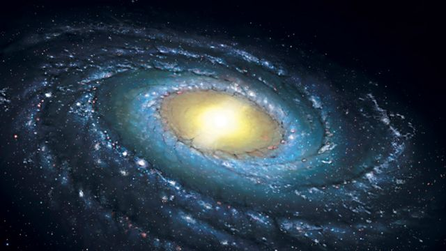
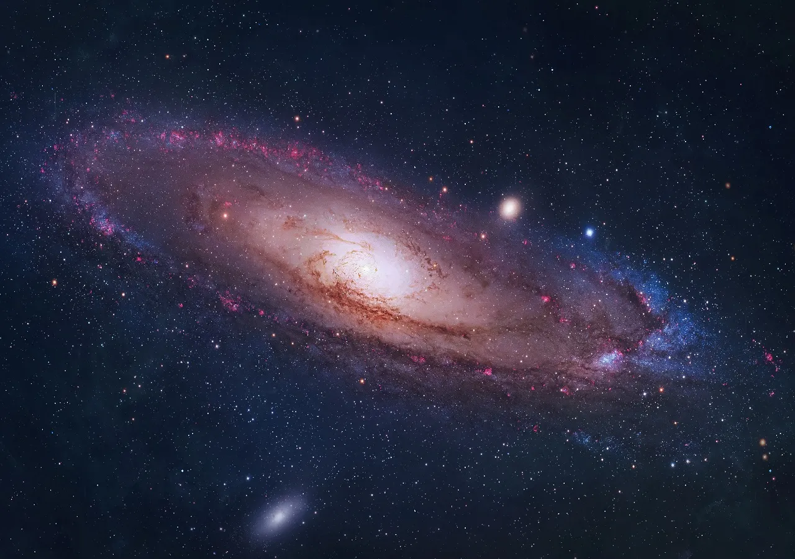
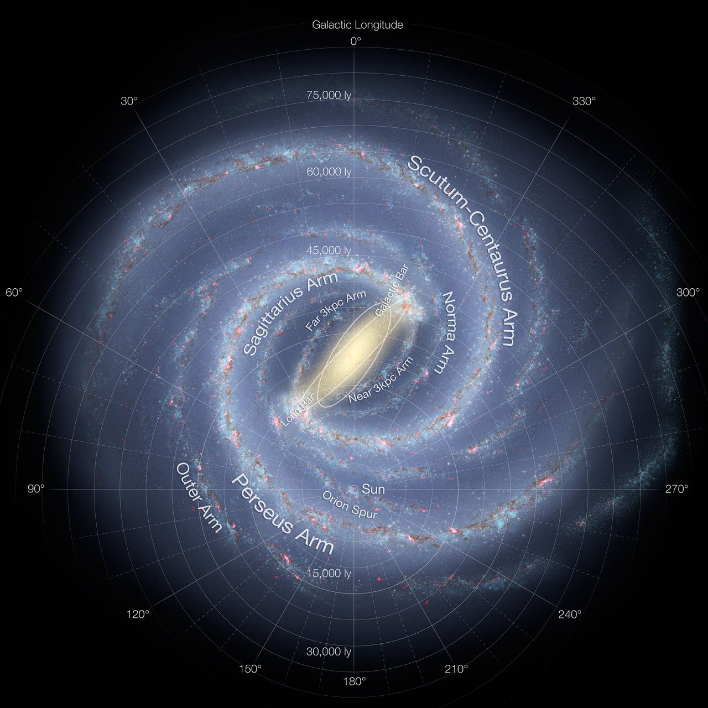
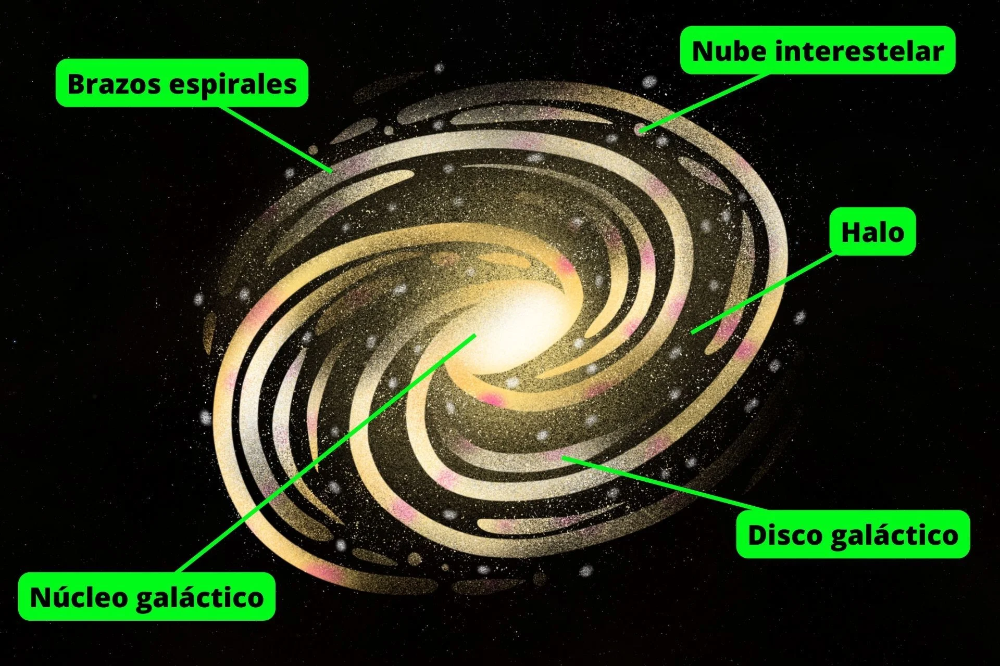
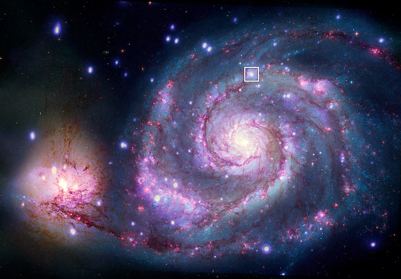

La Vía Láctea: Nuestra Galaxia Cósmica en Espiral
"La Luna, nuestro satélite celestial más cercano, es una joya etérea que ha iluminado los cielos
nocturnos de la
Tierra durante eones. Su misteriosa belleza y su influencia en nuestro planeta han inspirado mitos,
poesía y
exploración desde tiempos inmemoriales. Este mundo desolado ya La vez cautivador, con su superficie
arrugada y
sus cráteres que cuentan historias de impactos cósmicos pasados, es un testigo silencioso de la historia
de
nuestro sistema solar. La Luna ha sido el destino de misiones humanas que han dejado huellas y sueños en
su
polvo lunar. , y sigue siendo un faro que guía nuestra curiosidad hacia los confines del espacio.En
ella,
encontramos un reflejo de nuestra propia historia y el deseo constante de explorar y comprender el
universo que
se extiende mucho más allá de nuestra atmósfera.La Luna es una compañera leal que nos recuerda que,
aunque
pequeños en este vasto cosmos, nuestros sueños de exploración y descubrimiento son infinitos."

La Vía Láctea, nuestra galaxia hogar, es un vasto y fascinante sistema cósmico en espiral que alberga
más de 100
mil millones de estrellas, incluido nuestro Sol. Con un diámetro de aproximadamente 100,000 años
luz, esta
galaxia en constante movimiento se extiende en el espacio interestelar. En su centro yace un agujero
negro
supermasivo llamado Sagitario A*, mientras que sus brazos espirales, como el Brazo de Orión, acunan
regiones
densas de gas y estrellas en su órbita. La Vía Láctea, con una edad estimada de 13,600 millones de
años, ha sido
testigo de la evolución del universo y es un campo de estudio apasionante en la astronomía,
ofreciendo un
vistazo a la historia y la estructura de nuestro propio hogar cósmico.
Forma y Tamaño
La Vía Láctea es una galaxia en espiral barrada, lo que significa que tiene una estructura en
forma de
disco plano con brazos espirales y una barra central. Tiene un diámetro de aproximadamente
100,000 años
luz y un grosor de alrededor de 1,000 años luz en el centro.

Estrella
Se estima que la Vía Láctea contiene más de 100 mil millones de estrellas. El Sol es solo
una de estas
estrellas y se encuentra en uno de los brazos espirales llamado el Brazo de Orión o el Brazo
de Oriente.

Agujero negro central
En el centro de la Vía Láctea, a unos 27,000 años luz de distancia, se encuentra un agujero
negro
supermasivo llamado Sagitario A*. Tiene una masa equivalente a millones de veces la masa del
Sol

Brazos espirales
La Vía Láctea tiene varios brazos espirales, incluyendo el Brazo de Orión, el Brazo de
Perseo, el Brazo
de Sagitario y otros. Estos brazos están formados por regiones densas de gas y estrellas

Influencia en la Tierra
La gravedad de la Vía Láctea mantiene a la Tierra y a otros planetas en órbita alrededor del
Sol. Además,
la Vía Láctea proporciona la vista espectacular de nuestra galaxia desde la Tierra en noches
despejadas
